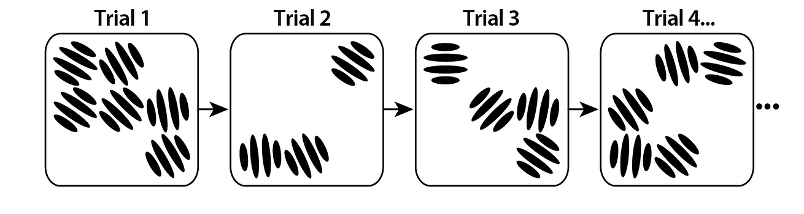
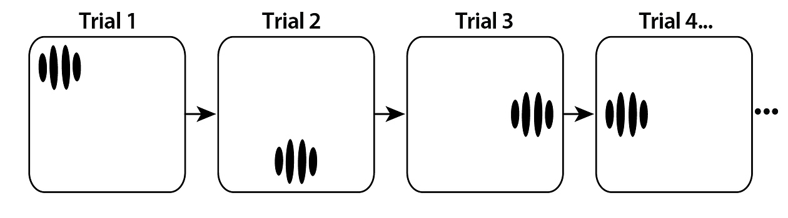
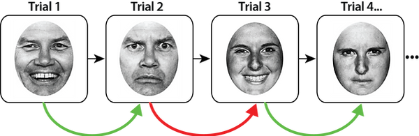
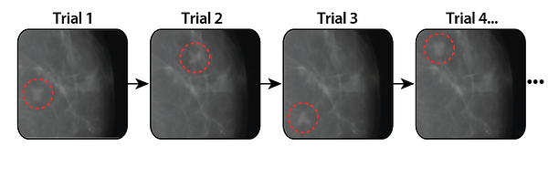

Stabilization
We perceive the world around us as stable over space and time, even though our visual experience is often discontinuous and distorted due to eye movements, masking, occlusion, camouflage, or noise. How are we able to easily and quickly achieve stable perception in spite of this constantly changing visual input? Recently, a novel mechanism of object stabilization was proposed, suggesting that perception occurs through serial dependencies in visual perception (Fischer & Whitney, 2014; Manassi & Whitney, 2024). By biasing our current percept towards the past, serial dependencies make similar (but distinct) objects appear more similar than what they are, and thus promote the perception of object stability (Manassi et al. 2023). The Manassi Lab investigates how serial dependencies contribute to stabilize our percept across time, with different kinds of features, under various modalities and across different populations (Marini et al. 2024; Pascucci et al. 2024).
In the complex environment we experience every day, stable scene perception is achieved through global serial dependencies: a special kind of global serial dependence between ensemble representations. Serial dependence occurs also in position perception (Manassi et al. 2022), contributing to the stable perception of objects in space from moment to moment (Manassi et al. 2024).


Serial dependence occurs also in facial expression and identity (Liberman et al. 2014), but it is highly selective for gender. Serial dependence occurs within same genders whereas it does not occur within different genders (see also Marini et al. 2024).

Taken together, these results show that serial dependencies are a global and selective mechanism which stabilize perception at many stages of visual processing, from initial position assignment to ensemble representations to emotional expression. Crucially, we found that serial dependence can generate an online illusion of stability: a single physically changing object can be misperceived as unchanging (Manassi et al. 2022) — click here to know more about it!
In the autocorrelated world we live in, it is useful for our visual system to trade accuracy for increased perceptual stability. In artificially uncorrelated situations, however, serial dependencies can be detrimental for object recognition. We found that radiologists' perceptual decisions on any given current radiograph are biased towards the previous images they have seen (Manassi et al. 2019; 2021; Ren et al. 2023a, 2023b).
